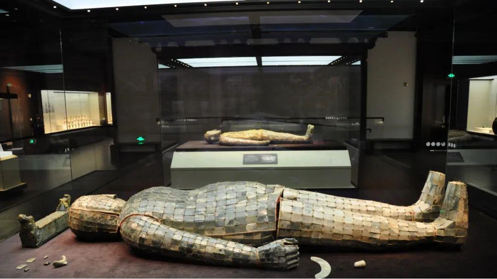

《礼记》丧祭礼
刘胜金缕玉衣，该玉衣是用金丝将玉片编缀而成。玉片为岫岩玉制作。上衣呈绿色，玉质莹润。下身为灰白和淡黄色。整体主要分为头罩、上衣、、手套、裤筒和鞋等五部分。共用不同形状玉片2498片，金丝约1100克。其外观和人体形状相同，是汉代皇帝和高级贵族死后的殓服。这是我国考古发掘中出土年代最早最完整的玉衣。
刘胜金缕玉衣，该玉衣是用金丝将玉片编缀而成。玉片为岫岩玉制作。上衣呈绿色，玉质莹润。下身为灰白和淡黄色。整体主要分为头罩、上衣、、手套、裤筒和鞋等五部分。共用不同形状玉片2498片，金丝约1100克。其外观和人体形状相同，是汉代皇帝和高级贵族死后的殓服。这是我国考古发掘中出土年代最早最完整的玉衣。